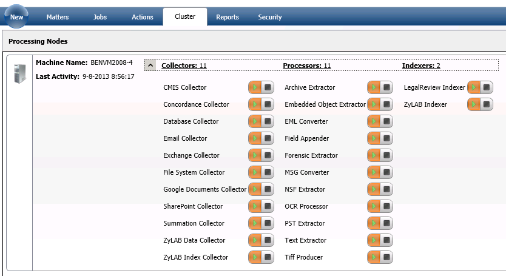

Select the Cluster tab for an overview of all the machines on the network that are part of the eDiscovery installation. The combined power of several machines can be used to process data. In the Cluster tab you can see which machines are up and running.
You can configure the machines that are processing by turning on or off some or all processors/collectors. If you want, for example, the machines to only do OCRing, stop all other processors and collectors and the machines will only receive OCR actions.

Server warnings
When a processing service is contacting the central eDiscovery service, the last activity of that processing service is updated.
- If the last activity of a processing service exceeds more than 30 min - a warning message (yellow icon with exclamation mark) is displayed.
- If the last activity of a processing service exceeds more than 120 min - an error message (red circle with a cross) is displayed
How to troubleshoot
The problem is that the processing service cannot connect to the central eDiscovery service. This does not necessarily mean that the node cannot be accessed, it means there is a problem with the service on that node (not started), the node cannot communicate to the central node (firewall, AV, network related issues, etc.). The first step would be to check if the service is actually running. If it is not, check the relevant logfiles (depending on the role of the node in the cluster) for possible clarification, etc.
|
|
|
|
|